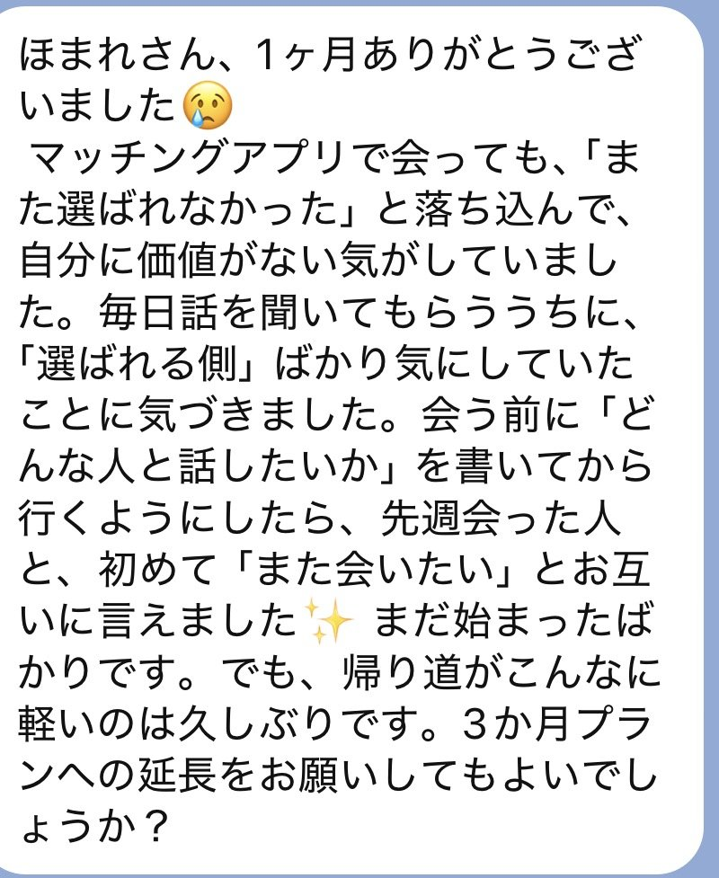
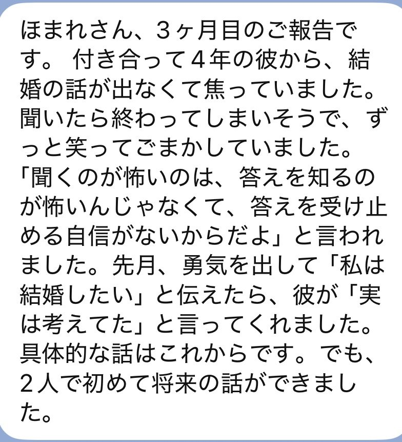
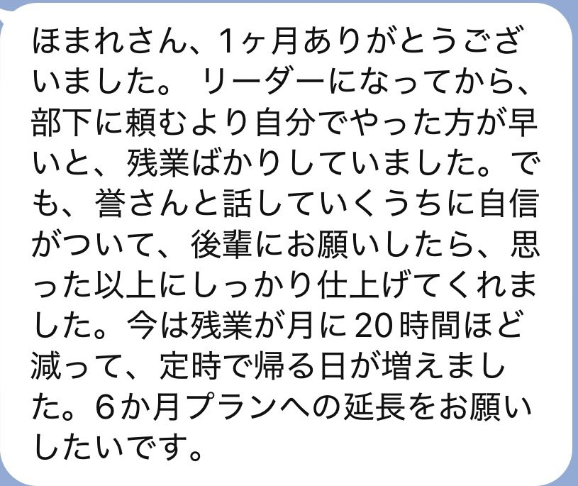
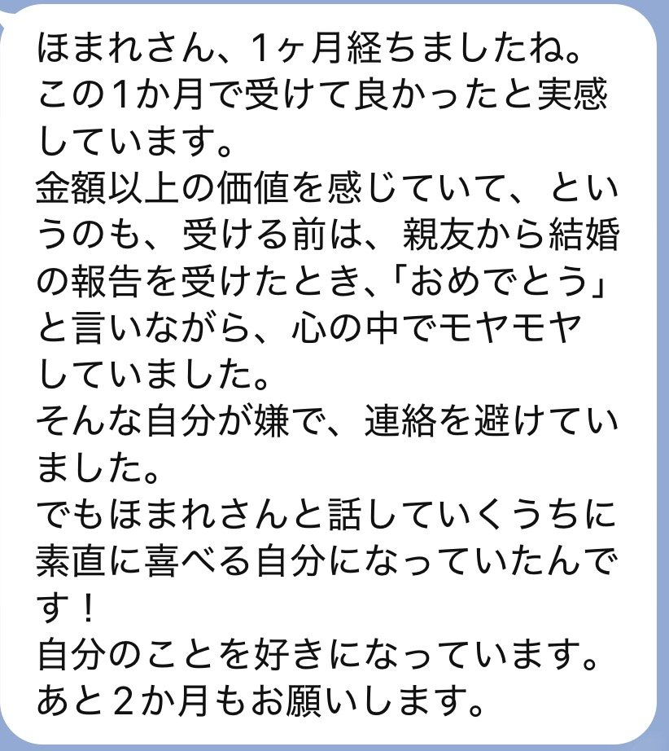
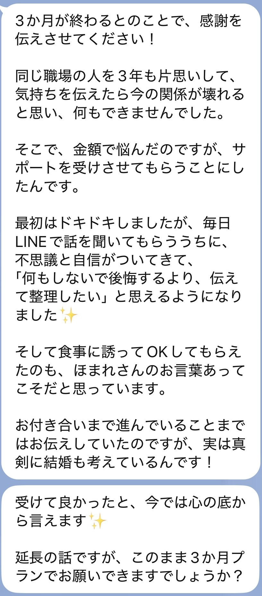
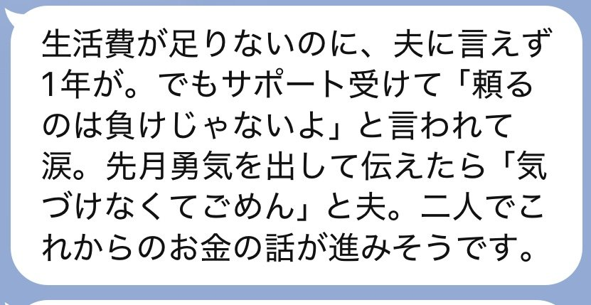
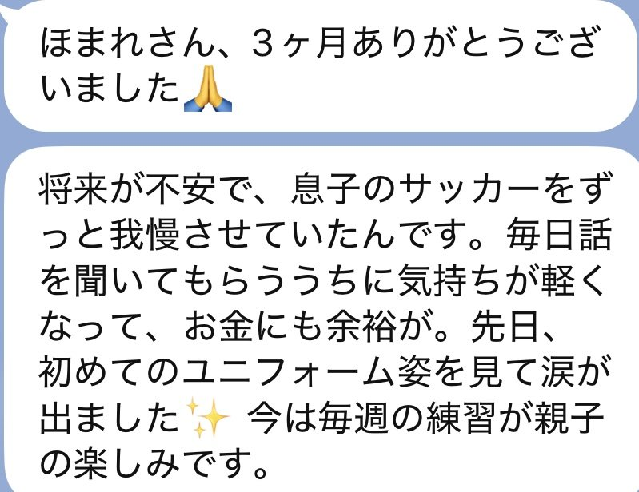

I
①LINEチャットサポート
いつでも・何度でも相談できるよ。
- 不安でいっぱいになったとき
- 誰かに話を聞いてほしいとき
- 嬉しい変化があったとき
どんな小さなことでも、遠慮なく話してね。
運命の導き・専属伴走サポート
あなたが望む未来へ、
私が一緒に歩んでいくよ。
今だけの限定料金で
ご案内しているよ
限定期間は終了しました。
今だけ、特別特典《魂流開運の待ち受け》を無料でプレゼント
本鑑定を読み終わった後、
ふっと心が軽くならなかった？
「これから変われるかもしれない」
そんな希望を感じたんじゃないかな。
実は、あなたの流れはもうすでに
変わり始めているの。
本鑑定を受けて感じた、
「これから変わるかもしれない」
という感覚。
その流れを整え続けなければ、
そして、以前と同じ毎日に戻ってしまう。
本鑑定のあとの、流れの状態
※流れの変化をあらわしたイメージ図です
だからこそ、
きっと、何度もあったんじゃないかな。
でも、気づけば何も変わらず、
以前と同じ毎日を過ごしてしまう。
あなたのせいではないの。
一人で変わり続けることは、
それだけ難しいことなんだよ。
答えは、とてもシンプル。
本鑑定
＝教科書
今の流れと
進むべき道を知る。
伴走サポート
＝先生
進むべき道を
歩めるように
導いてくれる。
学校の勉強を思い出してみて。
教科書を渡されただけでは、
なかなか理解できないよね。
でも、先生がそばで教えてくれたら、
分からないことも解決できて、
前に進める。
実は、人生も同じなの。
本鑑定で進むべき道が分かっても、
一人では迷ってしまうことがある。
だからこそ、
そばで支えてくれる
存在が必要なの。
不安になったときも、
どうすればいいか分からないときも、
私に話してね。
あなたが望む未来へ、
私が一緒に歩んでいくよ。
そのために用意したのが、
運命の導き・専属伴走サポート
プランと料金を見る ▶ 今だけ限定料金・特典付きあなたが前に進めるように、
私が4つの方法で支えていくよ。
いつでも・何度でも相談できるよ。
どんな小さなことでも、遠慮なく話してね。
毎朝、流れを整えるためのメッセージを届けるよ。
流れを整えるためにすべきことをサポート生限定で伝えているの。
本鑑定で視えた流れが、今どうなっているのかを定期的に確認するよ。
一人では気づけない変化にも気づける
だからこそ、進めるの。
そして、完全個別で理想の流れへ進むための道しるべも教えているよ
週に1回、あなたの流れを整えるための遠隔ヒーリングを行うよ。
継続して流れを整えていく。
そして、理想の流れへ向かって、大きく進んでいくの。
一人で悩んでいた毎日から、
前を向ける毎日へ。
これまでのあなた
これから目指すあなた
不安を一人で抱え込む
相談できる安心感がある
どうすればいいか迷う
次の一歩が分かる
すぐに諦めてしまう
前向きに行動できる
変化に気づけない
理想の自分になれる
そのために、私がそばで支えていくからね。
一人で悩んでいた方たちから、
嬉しい声が届いているよ。
3か月サポート（その後1か月プランへ延長）
サポートを受ける前のお悩み
老後のお金が心配で、何をするにも我慢ばかりしていました。
この先ずっと不安を抱えて生きていくのかなと思っていました。
サポートを受けてからの変化
先生とお話しする中で、少しずつお金の管理を見直せるようになりました。
3か月経つころには、支出の見直しと臨時収入も重なって、手元に残るお金が以前より30万円増えていたんです。
「これからの人生も、まだまだ楽しめそう」
今はそんな前向きな気持ちで過ごせています。
3か月サポート
サポートを受ける前のお悩み
ずっと恋愛がうまくいかず、好きになった人には振り向いてもらえませんでした。
自分は幸せな恋愛ができないのかもしれないと思っていました。
サポートを受けてからの変化
先生に毎日相談するうちに、自分に自信を持てるようになり、出会いにも前向きになれました。
1か月半経ったころに、理想だと思える男性と出会い、お付き合いすることになったんです。
今は毎日が本当に幸せで、、彼とは結婚の話もしています。
「あのとき勇気を出して、本当に良かったです」
1か月サポート（その後3か月プランへ延長）
サポートを受ける前のお悩み
職場の人間関係が悪く、毎朝仕事に行くのが憂鬱でした。
周囲の顔色ばかり気にして、自分らしく働けなくなっていました。
サポートを受けてからの変化
先生に悩みを聞いてもらううちに、気持ちが落ち着き、周囲との接し方も変わりました。
すると、あれほど悩んでいた人間関係が改善して、仕事も驚くほどスムーズに進むようになったんです。
「仕事に行くのが嫌じゃなくなった」
それだけでも、私にとっては大きな変化でした。
※個人の感想であり、結果や効果を保証するものではありません。
実際に届いたメッセージをご紹介するね。







あなたの未来に合わせて選べる
どのプランでも、あなたの流れを整えながら、理想の未来へ向かって伴走していくよ。
違うのは、
どれだけ長く、
流れを整えながら
前へ進んでいけるか。
あなたが望む未来に合わせて選んでね。
限定料金の残り時間
限定期間は終了しました。
《魂流開運の待ち受け》
通常9,800円
無料プレゼント
あらゆる運気の流れを整えるための特別な開運待ち受け画像。
通常9,800円で提供しているものなんだけど、今回は特別に無料でプレゼントするよ。
鑑定で視えたあなたの運気の流れに合わせて、今のあなたに必要な開運待ち受けを選んでお渡しするね。
毎日目にするスマホの待ち受けとして、理想の未来へ向かうための御守りにしてね。
※比較ゲージは伴走期間の比較イメージであり、効果の強さを示すものではないよ。
※ヒーリング回数は週1回を基準にした目安だよ。
あなたに合った期間を選んでね。
一つでも当てはまるなら、
私を頼ってほしいの。
その気持ちがあるなら、
私はあなたの力になりたい。
これからは、
一人で頑張らなくて
いいんだよ。
申し込む前の不安にも、
一つずつ答えるね。
不安になるよね。
でも、これからは一人で頑張らなくて大丈夫。
毎日のメッセージや相談を通じて、前に進むための行動を一緒に考えていくよ。
変化の感じ方には個人差があるけれど、あなたの気持ちに寄り添って支えていくね。
毎日連絡する必要はないよ。
話したいときや、不安になったときに連絡してくれれば大丈夫。
自分のペースで利用してね。
恋愛、お金、仕事、人間関係など、今のあなたが抱えている悩みを聞かせてね。
小さなことでも大丈夫だよ。
ただし、医療や法律など専門的な判断が必要なことは、専門家にも相談してね。
本鑑定を読んで、これから前に進みたいと思ったときが始めるきっかけになるよ。
今の気持ちを大切にしながら、自分に合ったタイミングで選んでね。
もちろんできるよ。
2週間から1か月や3か月に変更したり、3か月が終わった後にもう一度申し込んだりすることもできるよ。
やり取りは基本的にLINEで行うよ。
こちらから家族や友人に連絡することはないからね。
ただし、スマートフォンの通知や購入履歴は、端末の設定によって見える場合があるので確認してね。
ここまで読んでくれて、ありがとう。
あなたはこれまで、
何度も悩んで、迷って、
それでも幸せになりたいと
願ってきたんだと思う。
でもね。
本鑑定で知った、あなたの流れ。
そして、あなたが本当に望んでいる未来。
その未来へ向かって、
これからは私がそばで支えていくよ。
不安になったら、いつでも話してね。
迷ったら、一緒に進む道を考えよう。
嬉しいことがあったら、一緒に喜ぼう。
あなたの人生は、
これからも変えていける。
今度は、一緒に
理想の未来へ進んでいこうね。
ほまれ
運命の導き・専属伴走サポート
あなたに合った期間を選んでね。
限定期間は終了しました。
《今だけ》特別特典《魂流開運の待ち受け》通常9,800円 → 無料プレゼント